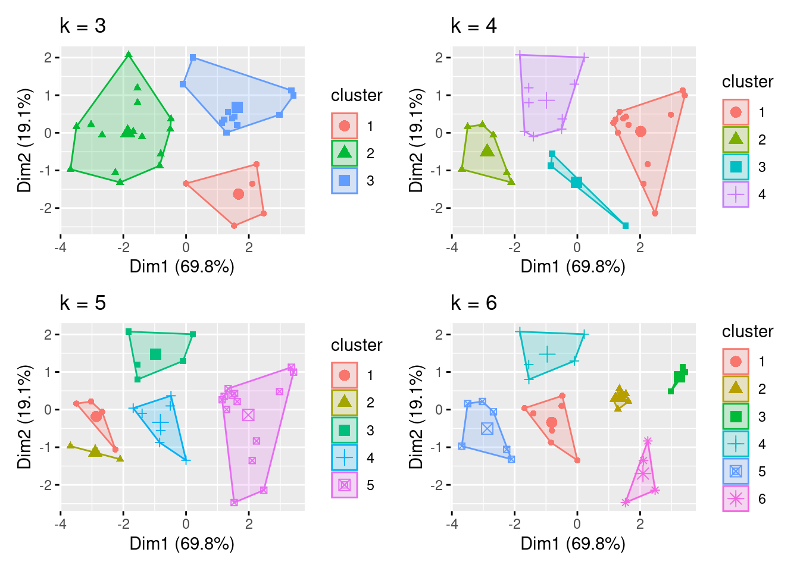
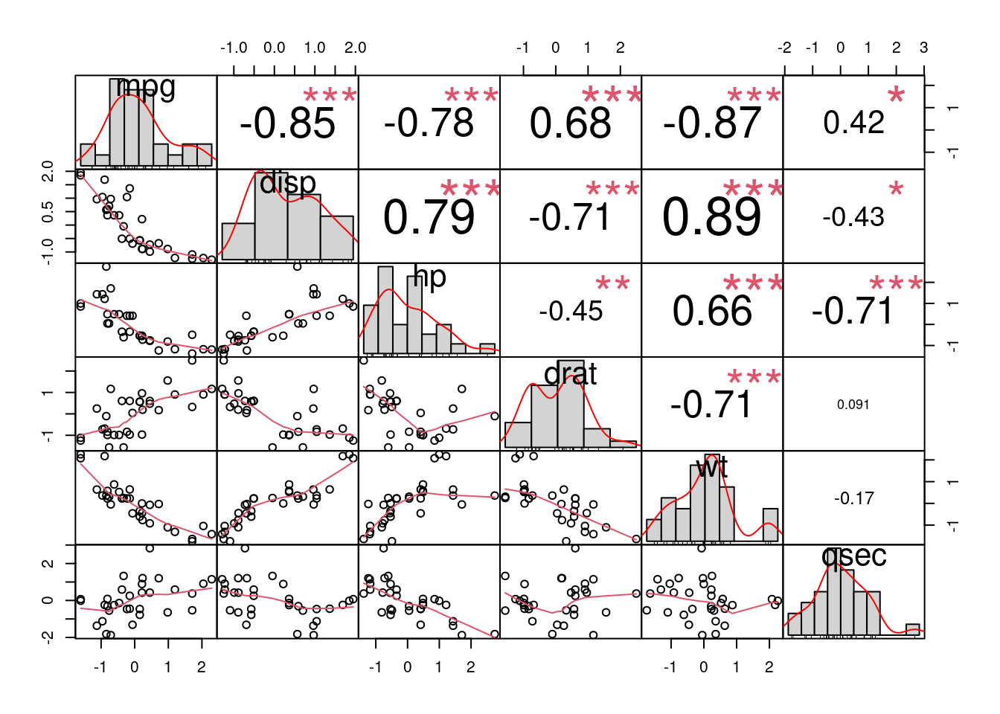
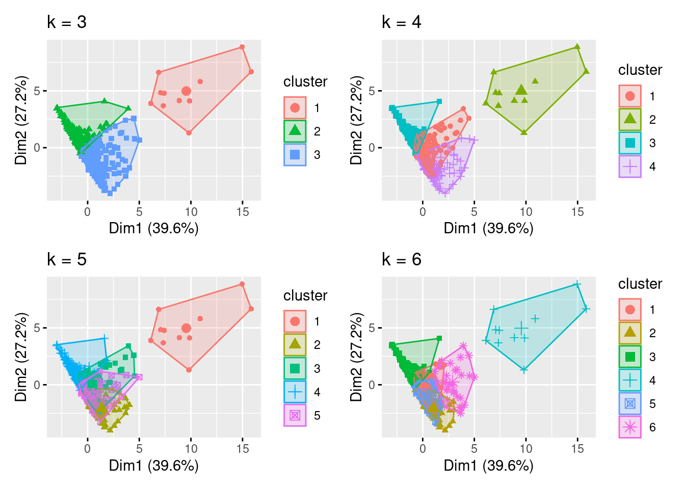
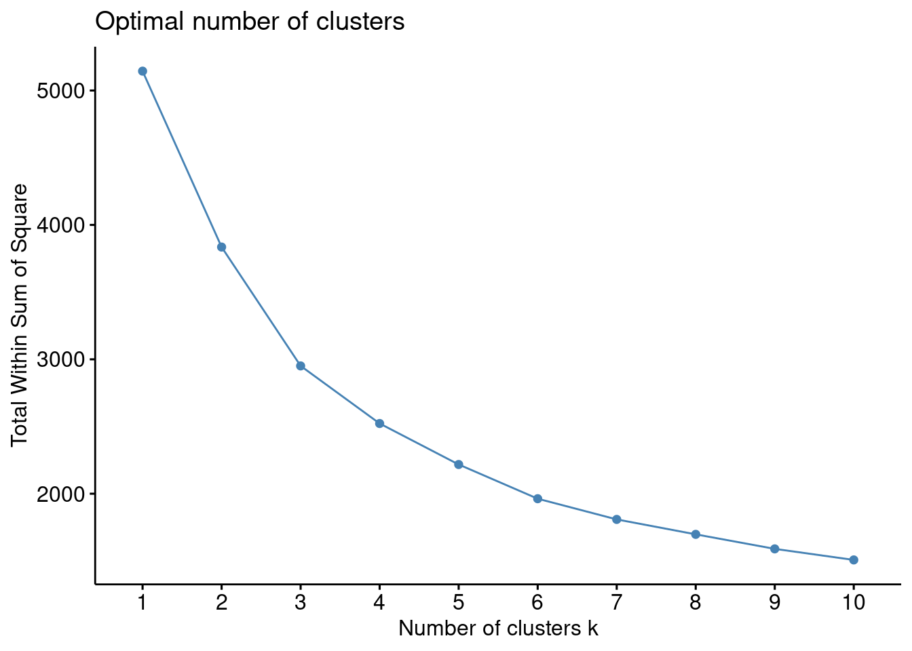
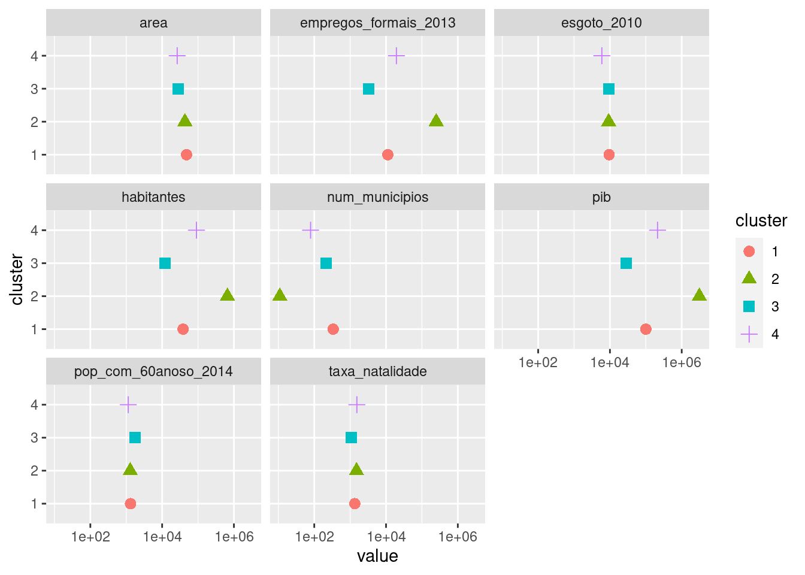
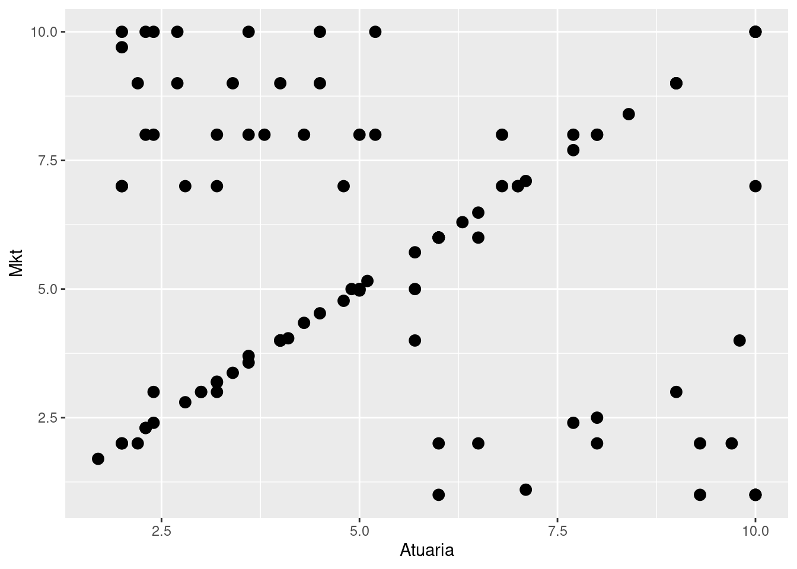
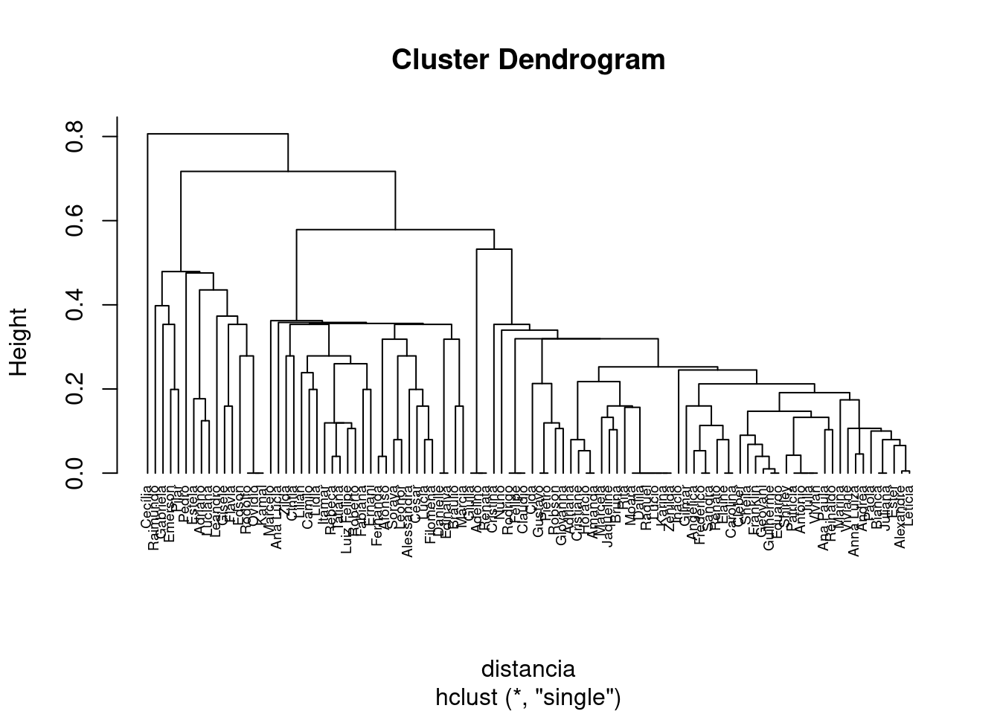
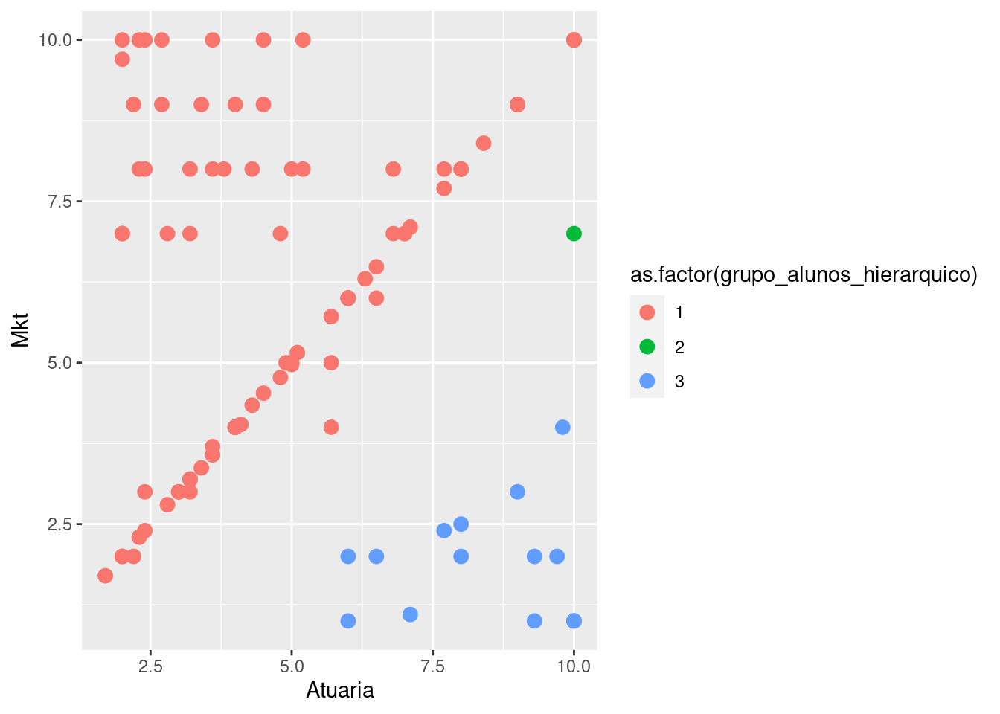
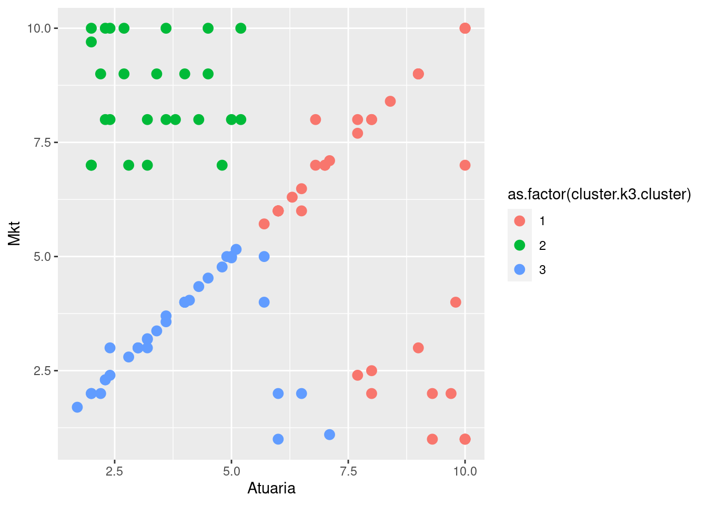
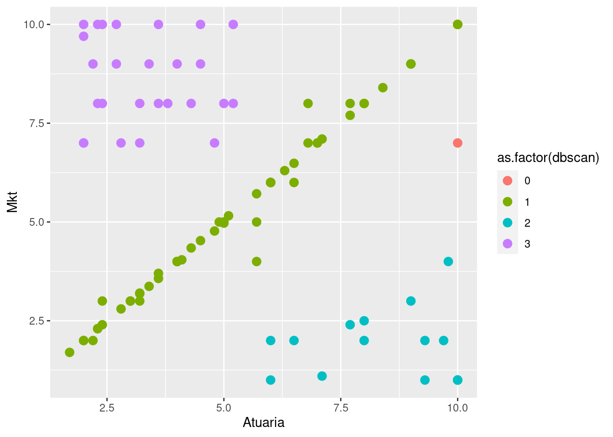

library(tidyverse)
library(cluster)
library (janitor)
library(factoextra)
library (patchwork)
library (readxl)
library (fpc)
library (gt)Não Supervisionado - Cluster
K-Means
Testes com analise de Cluster (Não Supervisionado)
Exemplo 1:
df <- mtcars |>
select (mpg, disp, hp, drat, wt, qsec) |>
scale()
k3 <- kmeans(df, centers = 3)
k4 <- kmeans(df, centers = 4)
k5 <- kmeans(df, centers = 5)
k6 <- kmeans(df, centers = 6)
G1 <- fviz_cluster(k3, geom = "point", data = df) + ggtitle("k = 3")
G2 <- fviz_cluster(k4, geom = "point", data = df) + ggtitle("k = 4")
G3 <- fviz_cluster(k5, geom = "point", data = df) + ggtitle("k = 5")
G4 <- fviz_cluster(k6, geom = "point", data = df) + ggtitle("k = 6")
G1 + G2 + G3 + G4
fviz_nbclust(df, FUN = hcut, method = "wss")
fit <- data.frame(k3$cluster) |>
rename (cluster = last_col())
df_final <- bind_cols(mtcars, fit) |>
rownames_to_column(var = "name")
df_EDA <- df_final |>
group_by(cluster) |>
summarise(num_models = n(),
across(c(2:8), ~mean(.x, na.rm = TRUE)))
df_EDA |>
pivot_longer(!cluster) |>
mutate(cluster = as_factor(cluster)) |>
ggplot(aes(name, value, shape = cluster, color = cluster)) +
geom_point(size = 5, alpha = 0.7) +
scale_y_log10() +
coord_flip() +
guides(size = "none")
#+
#facet_wrap(vars(cluster)) df_final |>
group_by(cluster) |>
gt(rowname_col = "name") |>
tab_stubhead(label ="Modelo") |>
tab_options(row.striping.include_table_body = TRUE)| Modelo | mpg | cyl | disp | hp | drat | wt | qsec | vs | am | gear | carb |
|---|---|---|---|---|---|---|---|---|---|---|---|
| 2 | |||||||||||
| Mazda RX4 | 21.0 | 6 | 160.0 | 110 | 3.90 | 2.620 | 16.46 | 0 | 1 | 4 | 4 |
| Mazda RX4 Wag | 21.0 | 6 | 160.0 | 110 | 3.90 | 2.875 | 17.02 | 0 | 1 | 4 | 4 |
| Datsun 710 | 22.8 | 4 | 108.0 | 93 | 3.85 | 2.320 | 18.61 | 1 | 1 | 4 | 1 |
| Merc 240D | 24.4 | 4 | 146.7 | 62 | 3.69 | 3.190 | 20.00 | 1 | 0 | 4 | 2 |
| Merc 230 | 22.8 | 4 | 140.8 | 95 | 3.92 | 3.150 | 22.90 | 1 | 0 | 4 | 2 |
| Merc 280 | 19.2 | 6 | 167.6 | 123 | 3.92 | 3.440 | 18.30 | 1 | 0 | 4 | 4 |
| Merc 280C | 17.8 | 6 | 167.6 | 123 | 3.92 | 3.440 | 18.90 | 1 | 0 | 4 | 4 |
| Fiat 128 | 32.4 | 4 | 78.7 | 66 | 4.08 | 2.200 | 19.47 | 1 | 1 | 4 | 1 |
| Honda Civic | 30.4 | 4 | 75.7 | 52 | 4.93 | 1.615 | 18.52 | 1 | 1 | 4 | 2 |
| Toyota Corolla | 33.9 | 4 | 71.1 | 65 | 4.22 | 1.835 | 19.90 | 1 | 1 | 4 | 1 |
| Toyota Corona | 21.5 | 4 | 120.1 | 97 | 3.70 | 2.465 | 20.01 | 1 | 0 | 3 | 1 |
| Fiat X1-9 | 27.3 | 4 | 79.0 | 66 | 4.08 | 1.935 | 18.90 | 1 | 1 | 4 | 1 |
| Porsche 914-2 | 26.0 | 4 | 120.3 | 91 | 4.43 | 2.140 | 16.70 | 0 | 1 | 5 | 2 |
| Lotus Europa | 30.4 | 4 | 95.1 | 113 | 3.77 | 1.513 | 16.90 | 1 | 1 | 5 | 2 |
| Volvo 142E | 21.4 | 4 | 121.0 | 109 | 4.11 | 2.780 | 18.60 | 1 | 1 | 4 | 2 |
| 3 | |||||||||||
| Hornet 4 Drive | 21.4 | 6 | 258.0 | 110 | 3.08 | 3.215 | 19.44 | 1 | 0 | 3 | 1 |
| Hornet Sportabout | 18.7 | 8 | 360.0 | 175 | 3.15 | 3.440 | 17.02 | 0 | 0 | 3 | 2 |
| Valiant | 18.1 | 6 | 225.0 | 105 | 2.76 | 3.460 | 20.22 | 1 | 0 | 3 | 1 |
| Merc 450SE | 16.4 | 8 | 275.8 | 180 | 3.07 | 4.070 | 17.40 | 0 | 0 | 3 | 3 |
| Merc 450SL | 17.3 | 8 | 275.8 | 180 | 3.07 | 3.730 | 17.60 | 0 | 0 | 3 | 3 |
| Merc 450SLC | 15.2 | 8 | 275.8 | 180 | 3.07 | 3.780 | 18.00 | 0 | 0 | 3 | 3 |
| Cadillac Fleetwood | 10.4 | 8 | 472.0 | 205 | 2.93 | 5.250 | 17.98 | 0 | 0 | 3 | 4 |
| Lincoln Continental | 10.4 | 8 | 460.0 | 215 | 3.00 | 5.424 | 17.82 | 0 | 0 | 3 | 4 |
| Chrysler Imperial | 14.7 | 8 | 440.0 | 230 | 3.23 | 5.345 | 17.42 | 0 | 0 | 3 | 4 |
| Dodge Challenger | 15.5 | 8 | 318.0 | 150 | 2.76 | 3.520 | 16.87 | 0 | 0 | 3 | 2 |
| AMC Javelin | 15.2 | 8 | 304.0 | 150 | 3.15 | 3.435 | 17.30 | 0 | 0 | 3 | 2 |
| Pontiac Firebird | 19.2 | 8 | 400.0 | 175 | 3.08 | 3.845 | 17.05 | 0 | 0 | 3 | 2 |
| 1 | |||||||||||
| Duster 360 | 14.3 | 8 | 360.0 | 245 | 3.21 | 3.570 | 15.84 | 0 | 0 | 3 | 4 |
| Camaro Z28 | 13.3 | 8 | 350.0 | 245 | 3.73 | 3.840 | 15.41 | 0 | 0 | 3 | 4 |
| Ford Pantera L | 15.8 | 8 | 351.0 | 264 | 4.22 | 3.170 | 14.50 | 0 | 1 | 5 | 4 |
| Ferrari Dino | 19.7 | 6 | 145.0 | 175 | 3.62 | 2.770 | 15.50 | 0 | 1 | 5 | 6 |
| Maserati Bora | 15.0 | 8 | 301.0 | 335 | 3.54 | 3.570 | 14.60 | 0 | 1 | 5 | 8 |
Carregar a base
municipios <- read_delim("dados/municipios.csv",
delim = ";", escape_double = FALSE, locale =
locale(date_names = "pt",
encoding = "ISO-8859-1"),
trim_ws = TRUE)#Excluindo a cidade de SP:
municipios <- municipios |>
filter (str_detect(.data$Município, "São Paulo", negate = TRUE)) |>
clean_names() |>
column_to_rownames(var = "municipio") Padronizar (Z scale)
municipios.padronizado <- scale(municipios)Criar alguns clusters
municipios.k3 <- kmeans(municipios.padronizado, centers = 3)
municipios.k4 <- kmeans(municipios.padronizado, centers = 4)
municipios.k5 <- kmeans(municipios.padronizado, centers = 5)
municipios.k6 <- kmeans(municipios.padronizado, centers = 6)Graficos
G1 <- fviz_cluster(municipios.k3, geom = "point", data = municipios.padronizado) + ggtitle("k = 3")
G2 <- fviz_cluster(municipios.k4, geom = "point", data = municipios.padronizado) + ggtitle("k = 4")
G3 <- fviz_cluster(municipios.k5, geom = "point", data = municipios.padronizado) + ggtitle("k = 5")
G4 <- fviz_cluster(municipios.k6, geom = "point", data = municipios.padronizado) + ggtitle("k = 6")Criar uma matriz com 4 graficos
G1 + G2 + G3 + G4
Método Elbow
fviz_nbclust(municipios.padronizado, FUN = hcut, method = "wss")
Juntando dados
municipios2 <- read_delim("dados/municipios.csv",
delim = ";", escape_double = FALSE, locale =
locale(date_names = "pt",
encoding = "ISO-8859-1"),
trim_ws = TRUE)municipios2 <- municipios2 |>
filter (str_detect(.data$Município, "São Paulo", negate = TRUE)) |>
clean_names() |>
column_to_rownames(var = "municipio") #Escolhido K = 4
municipiosfit <- data.frame(municipios.k4$cluster)Agrupar cluster e base
MunicipioFinal <- bind_cols(municipios2, municipiosfit) |>
rename(cluster = last_col())
MunicipioFinal_EDA <- MunicipioFinal |>
group_by(cluster) |>
summarise(num_municipios = n(),
across(c(2:8), ~mean(.x, na.rm = TRUE))) Plot final EDA
MunicipioFinal_EDA |>
pivot_longer(!cluster) |>
mutate(cluster = as_factor(cluster)) |>
ggplot(aes(cluster, value, shape = cluster, color = cluster)) +
geom_point(size = 3) +
scale_y_log10() +
coord_flip() +
guides(size = "none") +
facet_wrap(vars(name)) 
DBSCAN
#Comparando todos os métodos com dbscan ########################################
Carregar base de dados:
notas_categ <- as.data.frame(read_excel("dados/notas_categ.xlsx"))########################################
#
# Brincando e comparando todos os métodos com dbscan
#
########################################
#Carregar base de dados:
notas_categ <- as.data.frame(read_excel("dados/notas_categ.xlsx"))
#pegando os dados que usaremos
notas_alunos <- notas_categ |>
select(Estudante, Atuaria, Mkt)
#para visualizar no plano
notas_alunos |> ggplot() +
geom_point(aes(x = Atuaria,
y = Mkt),
size = 3)
#Transformar o nome
rownames(notas_alunos) <- notas_alunos[,1]
notas_alunos <- notas_alunos[,-1]
#Padronizar variaveis
notas_alunos_pad <- scale(notas_alunos)
#calcular as distancias da matriz utilizando a distancia euclidiana
distancia <- dist(notas_alunos_pad, method = "euclidean")
### método hiearquico
#Calcular o Cluster
cluster.hierarquico <- hclust(distancia, method = "single" )
# Dendrograma
plot(cluster.hierarquico, cex = 0.6, hang = -1)
#criando grupos
grupo_alunos_hierarquico <- cutree(cluster.hierarquico, k = 3)
table(grupo_alunos_hierarquico)grupo_alunos_hierarquico
1 2 3
84 1 15 #transformando em data frame a saida do cluster
grupo_alunos_hierarquico <- data.frame(grupo_alunos_hierarquico)
#juntando com a base original
notas_alunos_fim <- cbind(notas_alunos, grupo_alunos_hierarquico)
#visualizando em cores os clusters
notas_alunos_fim |> ggplot() +
geom_point(aes(x = Atuaria,
y = Mkt,
color = as.factor(grupo_alunos_hierarquico)),
size = 3)
### método k-means
#Calcular o Cluster
cluster.k3 <- kmeans(notas_alunos_pad, centers = 3)
#criando grupos
grupo_alunos_kmeans3 <- data.frame(cluster.k3$cluster)
#juntando com a base original
notas_alunos_fim <- cbind(notas_alunos_fim, grupo_alunos_kmeans3)
#visualizando em cores os clusters
notas_alunos_fim |> ggplot() +
geom_point(aes(x = Atuaria,
y = Mkt,
color = as.factor(cluster.k3.cluster)),
size = 3)
### método dbscan
#Calcular o Cluster
dbscan <- fpc::dbscan(notas_alunos_pad,eps = 0.56, MinPts = 3)
notas_alunos_fim$dbscan <- dbscan$cluster
#visualizando em cores os clusters
notas_alunos_fim |> ggplot() +
geom_point(aes(x = Atuaria,
y = Mkt,
color = as.factor(dbscan)),
size = 3)